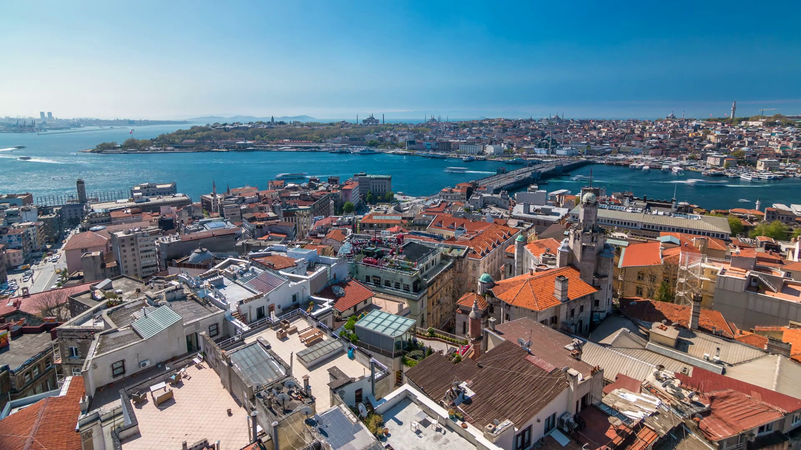
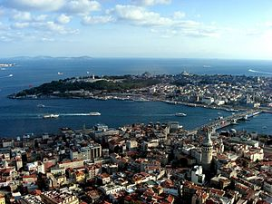
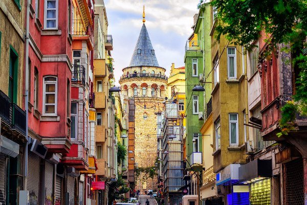

Where To Stay in Istanbul?
Should I stay in Sultanahmet or Beyoğlu? That’s a question people often search while they’re planning their trip to Istanbul. The problem is that there is no straightforward answer to it. It’s merely a matter of preference. Let me explain the pros and cons of both locations. 
Golden Horn
Sultanahmet and Beyoğlu are almost neighboring areas, if it wasn’t for the Golden Horn (Haliç). The Golden Horn is a flooded river valley, connecting with the Bosphorus and the Sea of Marmara. This historical natural harbor is now a main departure point for ferries, both going up the Bosphorus and heading for the Asian side.
 The Golden Horn actually separates the old heart of Istanbul (Sultanahmet, Eminönü and Fatih) from the modern part of Istanbul (Taksim, Şişli, Beşiktaş, etc.).
There are two bridges crossing the Golden Horn: the Unkapanı or Atatürk Bridge, and the Galata Bridge. Especially the latter is of interest to tourists because it is the shortest way between Sultanahmet and Beyoğlu.
On the upper deck you’ll pass by a seemingly eternal line of fisherman while witnessing the bustling activity on the Golden Horn. A visit to the lower deck will provide you with a ringside seat in one of the many cheap cafés to watch boats come and go.
Sultanahmet
The biggest incentive to book a hotel in Sultanahmet is obviously its proximity to major sightseeing spots such as the Hagia Sophia, the Blue Mosque, Topkapi Palace, the Basilica Cistern, Grand Bazaar, etc. They are all within walking distance of most hotels located in this area. The flip side is unfortunately that Sultanahmet turns into a pretty dead neighborhood once the sun sets. After dark the streets are empty and good night entertainment is scarce.
Beyoğlu
Beyoğlu is home to Dolmabahçe Palace, the Galata area with its famous tower, Istiklal Caddesi, etc. But the area is mostly known for its cozy neighborhoods (i.e. Cihangir, Galata), wide array of restaurants and cafés, and famous Istanbul night life. Beyoğlu is basically open 24 hours a day, seven days a week. But no need to worry, hotels are located in quieter areas, still within walking distance of all the action. Nişantaşı is next door so to speak, and shopping centers are only a metro ride away.
Our Advice
The truth is that it’s inevitable to spend time in both areas. So you’ll always have to travel between the two, being it by public transportation or by taxi. I stayed in hotels in both areas on numerous occasions, and always felt I had the best time staying in the Beyoğlu area. I love to arrive at my hotel after a full day of sightseeing, freshen up for a nice dinner, enjoy the nightlife and being able to walk back home surrounded by people whenever I feel it’s time to recharge the batteries.